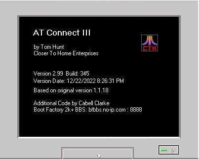

What is AT_Connect III

AT_Connect is the ATASCII Terminal Client...a Windows program that allows you to connect to Atari 8-bit Internet BBSes in ATASCII mode using the internet. All Atari 8-bit enthusiasts that remember the BBS days of the 1980's know that the only true way to call an Atari 8-bit BBS is in ATASCII mode. It's the only way to experience ATASCII text graphics and cursor controls. Back in the day, many Atari BBSes did not allow callers in ASCII mode...only ATASCII. My own BBS, The Boot Factory, was an ATASCII-only BBS for many years until I switched it over to the IBM PC world...but that is another story. My current internet BBS, Boot Factory 2k+, supports ASCII and ATASCII connections, but the system is still best viewed in ATASCII mode.
In early 2000, Tom Hunt (Closer to Home Enterprises) had just finished helping me get The Boot Factory 2k+ BBS online via the internet and he asked me if I would like to finish a program he had started...AT_Telnet. At the time, he was busy with other projects and did not have the time to work on this one. I, of course, said "yes" and so I began working on AT_Telnet. I added the missing cursor controls to the ATASCII processing, a necessary feature for true ATASCII compatibility. I also added other stuff such as a toolbar, a status line, a baud rate simulator and performed some general code cleanup. Tom released AT_Telnet I on his BBS and website probably around 2002. Over the next few years, I continued to play with the code and eventually added a BBS database, macro support, a configuration form, capture functions, 80-column support and more to the program.
I have been using this program to access Atari 8-bit internet BBSes since I started working on it. Over the last few years, I have worked very sporadically making changes and updating it to suit my needs. In December of 2008, I decided that I would finally release this version. When I built the setup package, it was 7 megabytes in size due to extra files needed to support the BBS database. So, because of the sheer size of the distribution package, I removed the BBS database and some unnecessary active X controls and built the new streamlined BBS Editor which maintains the BBS entries in a Text file (.INI). This cut the size of the distribution package by 4 megabytes and gave me an easier method of adding features to the BBS List and Editor. Tom's original version was AT_Telnet. This was always a misnomer as there was no telnet code in the program. Now in 2022, I have decided to rename the program to AT_Connect and release it as version 3.
In Tom's original version, he included the screens and references to BobTerm. In the interest of maintaining the original spirit of AT_Telnet, I have kept all of the BobTerm screens in the program and maintained the basic look and feel of Tom's original brainchild. Except for the addition of the toolbar and the changes to the control panel, the addition of the Box, the URL detection and the ATEditor, the program looks exactly like Tom's original work.
As of this writing, there are only a handful of Atari 8-bit BBSes left on the internet. Many of the callers to my BBS call in ASCII mode. This program will now give more of them the ability to call in ATASCII mode.